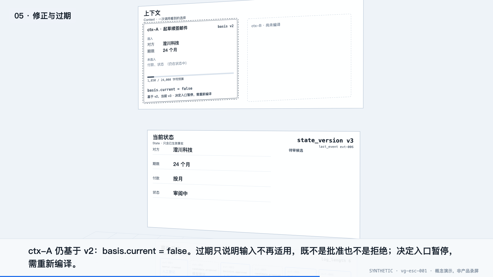
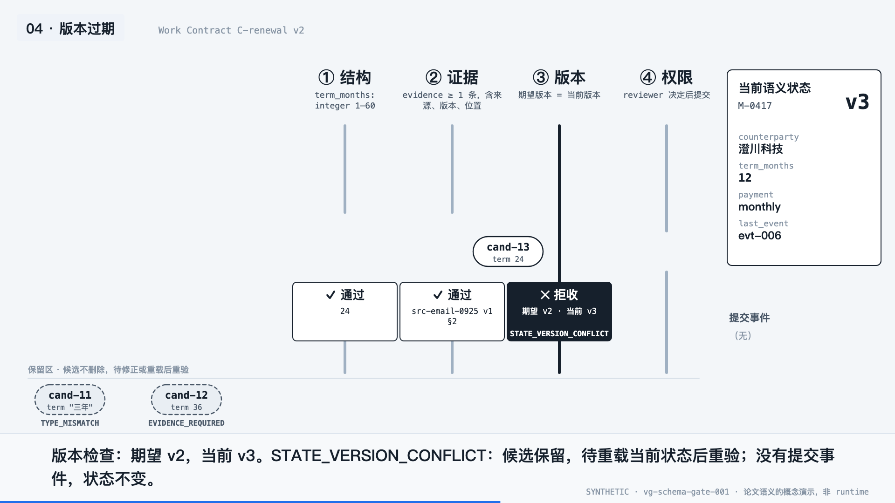
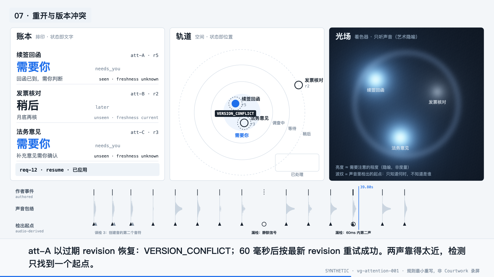
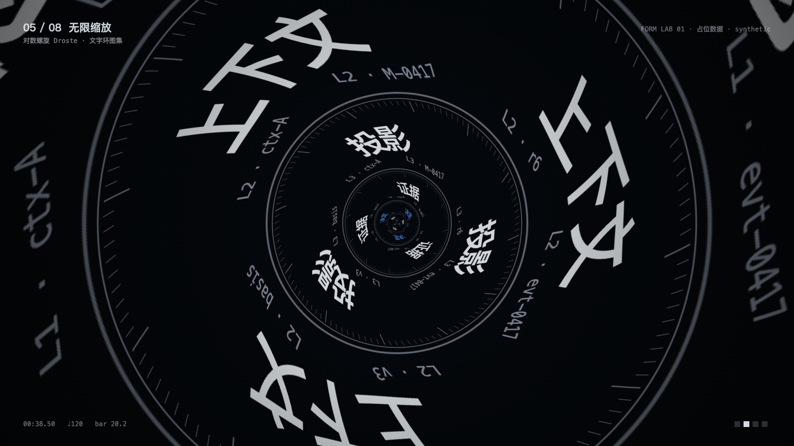

Praxis · demos/visual-grammar · 2026-09-29
视觉语法工场
前三件用合成 fixture 表达本地项目的语义，第四件只探索形式。全部以本地 Canvas/WebGL 运行，可暂停、逐帧 seek，也可切换为静态分镜；每件都导出了可解码的 WebM，有声音的作品带 Opus 音轨。画面中的语义由页面内的函数算出，不是产品录屏。




Praxis · demos/visual-grammar · 2026-09-29
前三件用合成 fixture 表达本地项目的语义，第四件只探索形式。全部以本地 Canvas/WebGL 运行，可暂停、逐帧 seek，也可切换为静态分镜；每件都导出了可解码的 WebM，有声音的作品带 Opus 音轨。画面中的语义由页面内的函数算出，不是产品录屏。



